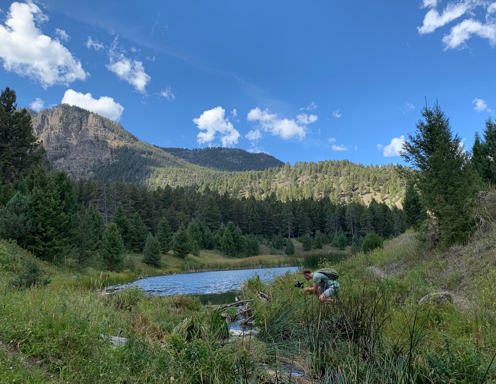
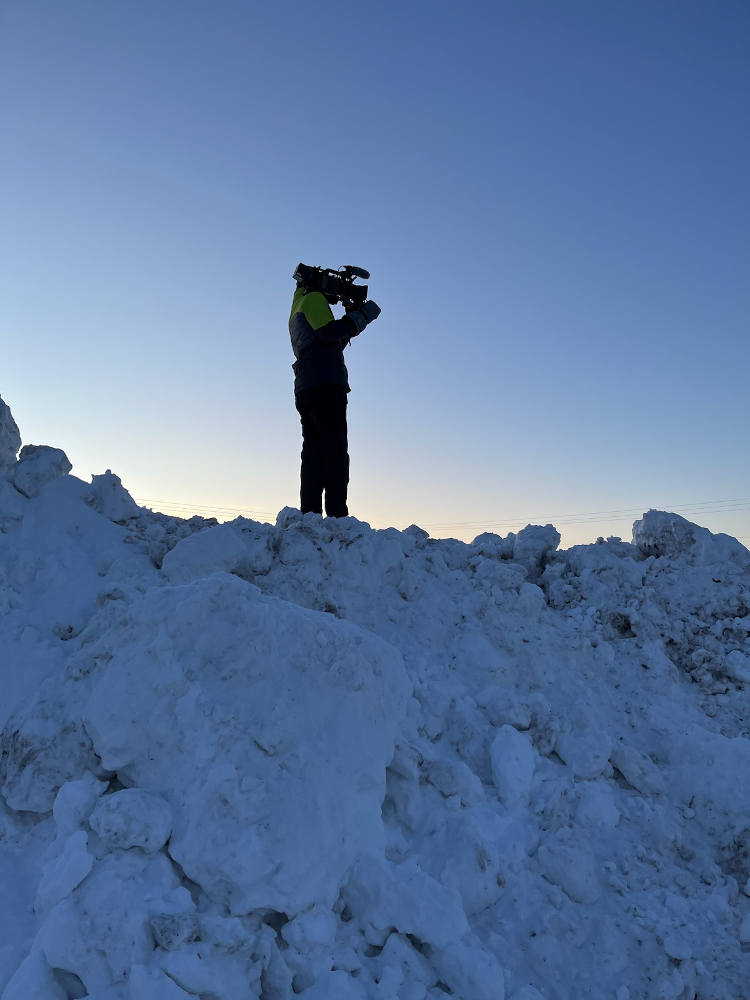

About
Why I became a Videographer
When I was growing up, my family would take yearly vacations all across the US. I’ve been to both oceans as well as dozens of National Parks and my favorite part of those journeys would be to document everything. I would catalogue each day into a journal and take notes of details we'd find along the way, but even more exciting to me was photographing the incredible places we would visit. Pictures of America’s unique landscapes, people, and animals have filled the memory cards of my first, second and third cameras. I was hooked. I began taking photos every chance I got, ever searching for that perfect angle.
But then I went off to college. I no longer had the time to look for great shots and my only tastes of photography became snapping spur-of-the-moment pics with my phone. I became disconnected from my love of picture taking. When it came time to decide on my next steps however, I knew I wanted to make my camera my career. So after I graduated, I got jobs with my local FOX and PBS Stations. I learned everything I could from both, and after a year, PBS hired me as a full-time Videographer/Editor. While there I worked on hundreds of episodes of television, both edited and live, and gained a lifetime of professional camera experience from my seasoned and dedicated coworkers. I was also able to work with the best gear in the business and really come into my own as a competent storyteller.I left PBS in August 2023 to see who I could become on my own. I vacationed some, bringing my camera and newfound video skills over to Europe. And when I returned, I was ready to break out. Since then I’ve done extensive work for Šek Design Studio as well as taken on clients of my own, bringing that excitement I had as a boy to every project. I get to do something I love every day for a living and you can see that passion reflected in my work.
Awards and Recognition
For my work as a Videographer, I have been nominated for 3 Upper Midwest Regional Emmy® Awards. My younger self wouldn't believe me if I told him that and I'm extremely honored to have been professionally recognized in such a major way. It really is a testament to the constant support I get from the people I love as well as a result of the once-in-a-lifetime opportunities I've recieved.
- © 2024 OZ Video
- Design: Owen Zagrabelny HTML5 UP